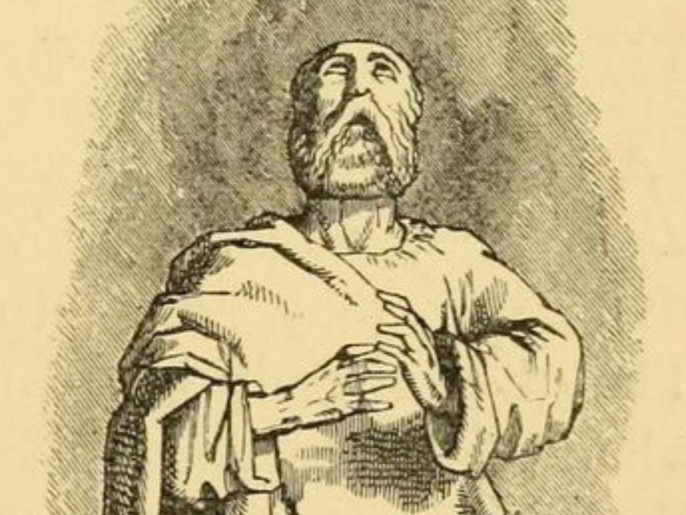

Filósofo Tales de Mileto
Considerado el primer filósofo de la cultura occidental, fue uno de los primeros en dar una explicación racional a los fenómenos del mundo. Propuso que el agua es el elemento que da origen a todo lo viviente y por la mismo la relaciona con el alma, el movimiento y la divinidad.
Se considera como uno de los primeros astrólogos de la historia occidental y se le atribuyen las obras El solsticio y El equinoccio, aunque ha sido difícil comprobar si efectivamente escribió las escribió él.
